单位圆、正弦定理与余弦定理
到目前为止，我们都是利用直角三角形来定义各个三角函数的，而且我强烈建议大家无须思考，因为你们只要记住这些定义即可。但是，这些定义有一个缺点：只在角的度数为0°~90°时（直角三角形一定有一个90°角和两个锐角），我们才能求出它的正弦、余弦和正切。本节将讨论如何利用单位圆来定义三角函数，这种定义法可以帮助我们求出任意角的正弦、余弦和正切。
请大家回顾一下单位圆的定义：以圆点 ( 0, 0 ) 为圆心，以1为半径的圆。在上一章，我们利用勾股定理推导出单位圆的方程式为 x2 + y2 = 1。如下图所示，假设从点 (1, 0) 开始沿圆周逆时针方向运动构成的锐角A在单位圆上所对应的点为 (x, y) ，请大家确定该点的坐标。
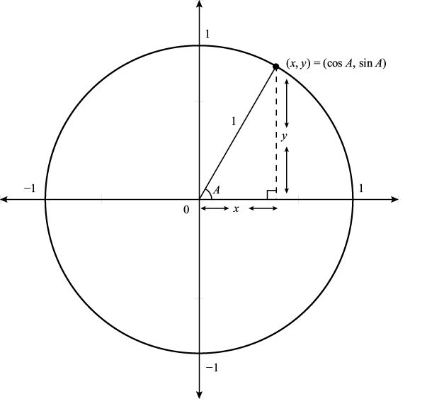
单位圆上与角A对应的点 ( x, y ) 的坐标为：x = cosA，y = sinA
画一个直角三角形，然后根据余弦和正弦函数，就可以求出x和y。具体来说，就是：
cosA =
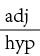
=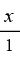
= x
cosA =
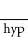
=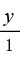
= y
换句话说，点 (x, y)等于 (cosA, sinA)。[推而广之，如果圆的半径为r，那么 (x, y) = (r cosA, r sinA)。]
我们可以把上述结论推广至任意角，把 (cosA, sinA) 定义为角A在单位圆上的对应点。（换言之，角A与单位圆交点的横坐标与纵坐标分别为cosA和sinA。）我们用下图来表示这个结论。
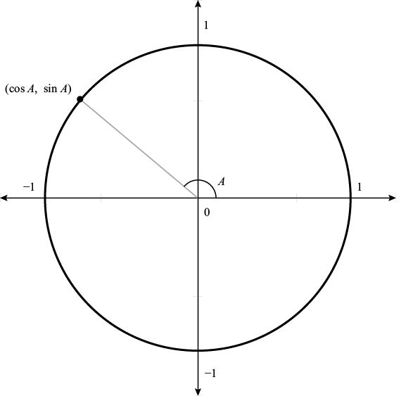
cosA与sinA的一般定义
在下图中，我们以30°为单位，将单位圆分成若干等分，再标记出45°的坐标，因为它们分别对应我们之前研究的特殊三角形的内角。我们列出了0°、30°、45°、60°和90°的余弦和正弦，具体如下：
(cos 0°, sin 0°) = (1, 0)
(cos 30°, sin 30°) = (
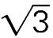
/ 2, 1 / 2)
(cos 45°, sin 45°) = (
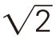
/ 2, / 2)
(cos 60°, sin 60°) = (1 / 2, / 2)
(cos 90°, sin 90°) = (0, 1)
我们还会发现，当这些角成倍扩大时，我们可以根据第一象限的情况来求其他象限角的三角函数值。
由于角的度数增加或减少360°时，角的坐标实际上没有发生变化（只不过沿圆周运动了一圈）。因此，对于任意角，都有：
sin (A ± 360°) = sinA cos (A ± 360°) = cosA
负角的运动方向是顺时针方向。例如，–30°与330°的坐标相同。请注意，沿顺时针方向运动A度，与沿逆时针方向运动A度，最后的横坐标相同，而纵坐标的正负号相反。换句话说，对于任意角 A：
cos (–A) = cosA sin (–A) = – sinA
例如，cos (–30 °) = cos 30 °= /2，sin (–30 °) = –sin 30 °= –1/2
角A关于y轴映射，就会得到补角180° –A。此时，单位圆上对应点的纵坐标保持不变，而横坐标变成相反数。换句话说：
cos (180° – A) = – cosA sin (180° – A) = sinA
例如，当A = 30°时，从上式可知：
cos 150°= – cos 30°= – /2 sin 150°= sin 30°= 1 / 2
我们利用类似方法，继续定义其他三角函数，例如，tan A = sinA / cosA。
x轴和y轴将平面分成4个象限，我们把它们分别称为第一象限、第二象限、第三象限和第四象限。其中，第一象限的角为0°~90°，第二象限的角为90°~180°，第三象限的角为180°~270°，第四象限的角为270°~360°。请注意，第一象限、第二象限的正弦函数为正值，第一象限、第四象限的余弦函数为正值，因此，第一象限、第三象限的正切函数为正值。有的学生想出了一句口诀：“All Students Take Calculus”（所有学生都要学习微积分），以首字母（A、S、T、C）对应各象限中数值为正值的三角函数（即所有三角函数、正弦、正切、余弦）。
值得我们学习的最后一批词汇与反三角函数有关，因为反三角函数可以帮助我们确定角的度数。例如，1 / 2的反正弦函数arc sin(1 / 2)表示角A的正弦函数sinA = 1 / 2。我们知道sin 30°= 1 / 2，因此：
arc sin(1 / 2) = 30°
反正弦函数arc sin对应的角一定在 –90°与90°之间，但我们必须知道，在这个区间之外，还有一些角的正弦函数值一样，例如sin 150°= 1/2。同样，在30°或150°的基础上加上360°的倍数之后，正弦函数的值保持不变，仍然是1/2。
对于下图所示的3–4–5三角形，利用三角函数与计算器，可以通过3种不同方法计算出角A的度数：
∠A = arc sin (3 / 5) = arc cos (4 / 5) = arc tan (3 / 4) ≈ 36.87°≈ 37°
利用反三角函数和边长可以求出角的度数。在本例中，由于tan A = 3 / 4，因此∠A = arc tan (3 / 4) ≈ 37°
接下来，我们就可以利用这些三角函数来解决问题了。在几何学中，给定任意直角三角形的直角边长之后，我们就可以根据勾股定理求出其斜边的长度。在三角学中，我们可以利用“余弦定理”（law of cosines），对任意三角形进行类似运算。
定理（余弦定理）：对于任意三角形ABC，已知两条边的边长分别为a和b，两边的夹角为C，则第三边的边长满足下列等式：
c2 = a2 + b2 – 2ab cos C
例如，在下图中，三角形ABC两条边的边长分别为21和26，两边夹角为15°。根据余弦定理，第三边的长度c必然满足：
c2 = 212 + 262 – 2 (21) (26) cos 15°
由于cos 15°≈ 0.965 9，因此上述方程式可以化简为c2 = 62.21，即c ≈ 7.89。
延伸阅读
证明：在证明余弦定理时，我们需要考虑∠C是直角、锐角或钝角这三种情况。如果∠C是直角，那么cos C = cos 90°= 0，此时余弦定理简化为 c2 = a2 + b2，与勾股定理一致。
如上图所示，如果∠C是锐角，从B向 画垂线并与交于点D，就可将三角形ABC分割成两个直角三角形。根据上图，在三角形CBD中，由勾股定理可知 a2 = h2 + x2，也就是说：
画垂线并与交于点D，就可将三角形ABC分割成两个直角三角形。根据上图，在三角形CBD中，由勾股定理可知 a2 = h2 + x2，也就是说：
h2 = a2 – x2
从三角形ABD可以得到 c2 = h2 + (b – x)2 = h2 + b2 – 2bx + x2，即：
h2 = c2 –b2 + 2bx – x2
综合上面两个等式，消去h2，可以得到：
c2 –b2 + 2bx – x2 = a2 – x2
也就是说：
c2 = a2 + b2 – 2bx
从直角三角形CBD可以得出cos C = x/a，即x = a cosC。由此可知，当∠C是锐角时：
c2 = a2 + b2 – 2ab cos C
如下图所示，当∠C是钝角时，我们可以在三角形的外部构建直角三角形CBD。
对直角三角形CBD和ABD分别运用勾股定理，可以得到a2 = h2 + x2，且c2 = h2 + (b + x)2。消去h2，可以得到：
c2 = a2 + b2 + 2bx
从三角形CBD可知，cos (180°– C ) = x/a，即 x = acos (180°– C ) = –acos C。因此，我们再一次证明下面这个等式成立。
c2 = a2 + b2 – 2ab cosC 
顺便告诉大家，我们还可以根据一个非常简洁的公式求出上述三角形的面积。
推论：对于任意三角形ABC，已知两条边的边长分别为a和b，两边的夹角为C，有：
三角形ABC的面积 = absin C
absin C
延伸阅读
证明：底为b、高为h的三角形面积是bh。在证明余弦定理时，我们考虑了三角形的3种情况。在这3种情况下，三角形的底边都是b，因此我们现在需要确定h的值。如果∠C是锐角，通过观察可知，sin C = h/a，即 h = a sinC。如果∠C是钝角，有sin (180°– C) = h / a，即 h = a sin (180°– C) = a sin C，结果同上。如果∠C是直角，则h = a。由于 C = 90°，且sin 90°= 1，因此h =a sinC。也就是说，在这3种情况下，都有h = a sin C。因此，三角形的面积等于ab sin C。证明完毕。 □
根据推论，我们发现：
sin C =
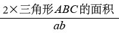
因此，
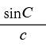
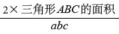
换句话说，对于三角形ABC来说，(sin C) / c等于三角形ABC面积的两倍与所有边长乘积的商。不过，这个结论对角C没有任何特定要求，换成(sinB) / b或者(sinA) / a，结论同样成立。因此，我们实际上证明了下面这条特别有用的定理。
定理[正弦定理（law of sines）]：在任意三角形ABC中，如果3条边的边长分别为a、b、c，则有：
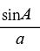
=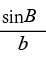
=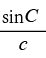
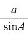
=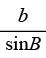
=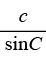
有了正弦定理，在计算山的高度时，我们就多了一种方法。如下图所示，我们重点考虑我们最初所在的位置与山顶之间的距离a。
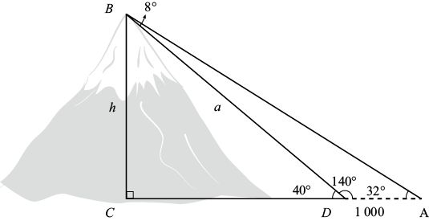
利用正弦定理计算山的高度
方法5（正弦定理法）：在三角形ABD中，∠BAD = 32°，∠BDA = 180°– 40°= 140°，因此∠ABD = 8°。根据正弦定理：
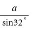
=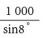
两边同时乘以sin 32°，就会得到 a = 1 000 sin 32°/ sin 8°≈3 808英尺。同时，由于sin 40°≈ 0.642 8 = h / a，因此：
h = a sin 40°≈3 808×0.642 8 = 2 448
也就是说，山的高度约为2 450英尺，与前面的计算结果一致。
延伸阅读
下面这个公式名叫“海伦公式”（Heron’s formula），也值得大家花时间学习。根据这个公式，我们可以求出边长分别为a、b、c的三角形面积。如果先求出三角形的“半周长”（semi-perimeter）
s =
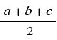
海伦公式就会变得十分简单。根据海伦公式，如果三角形的边长分别为a、b、c，那么它的面积为：
例如，如果三角形的边长分别为3、14、15（π的前5位数字），那么它的半周长 s = (3 + 14 + 15) / 2 = 16。因此，三角形的面积为
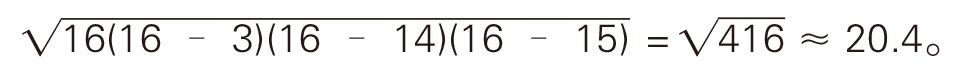
通过代数运算和余弦定理，可以推导出海伦公式。